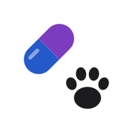
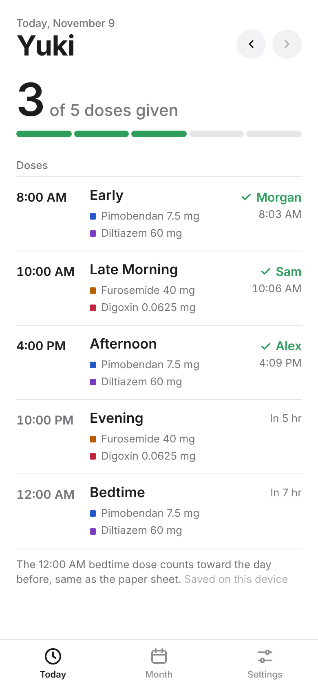
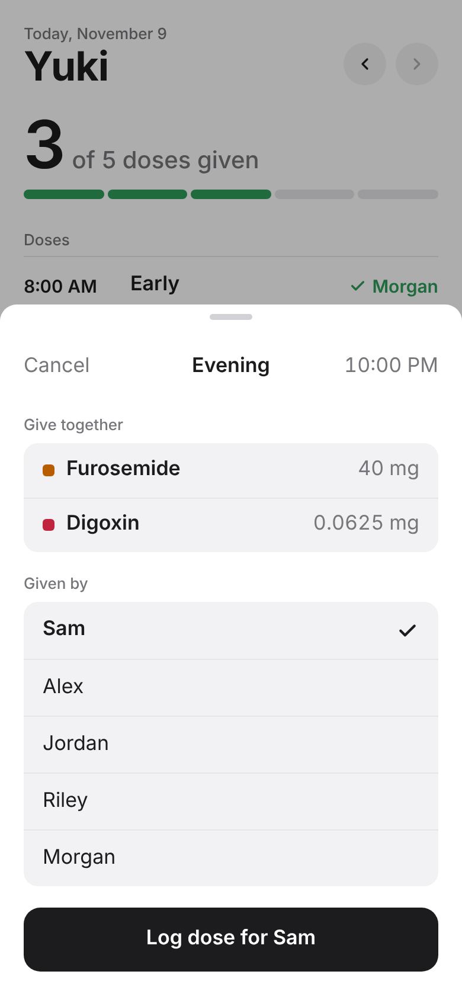
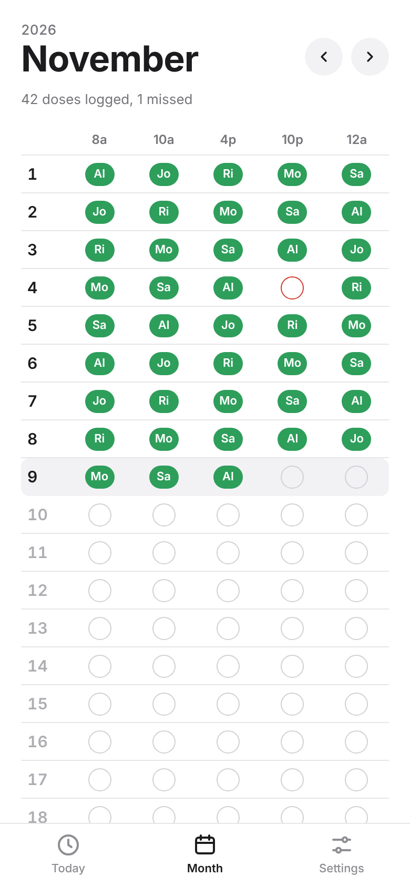
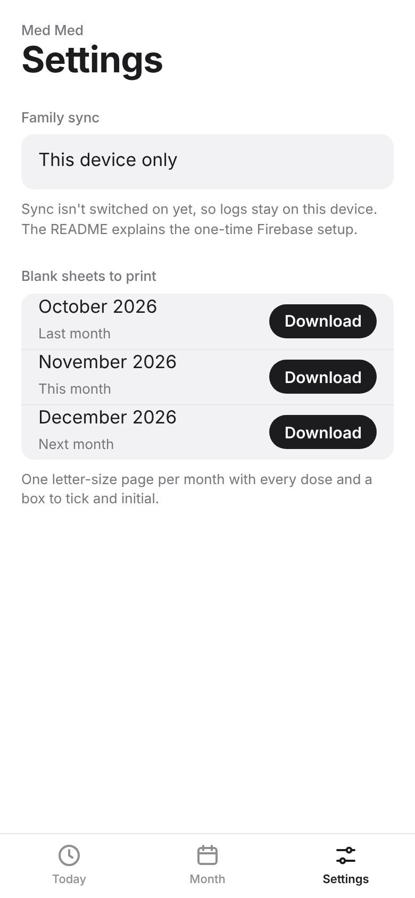

Yuki's daily heart medicine, logged by the whole family.
Yuki takes heart medicine five times a day. Med Med shows what's due next, lets whoever gives a dose log it with two taps, and keeps everyone's phone on the same log, so nobody doubles a dose or misses one. The month view shows every dose at a glance, and blank sheets print for the fridge.



At a glance

Starting the log makes a private household code. Share the invite link once and every phone that opens it sees and updates the same log, live. If a link ever leaks, start a new log and re-invite.
If a dose isn't logged about 20 minutes after it's due, every phone that turned alerts on gets a notification. A check runs every 15 minutes, so an alert can take up to about half an hour.
One Letter page per month, with every dose, a box to tick and room for initials, for days when a paper sheet on the fridge is easier.
The midnight dose counts toward the day before, the same way the paper sheet does, so the app and the fridge never disagree.
Add it to the Home Screen and it opens full screen with its own icon, in light or dark mode.
The log holds only dose times and first names. The database only lets in phones that have the household code.
A single web page on GitHub Pages. Family sync uses Firebase's free tier, and the missed-dose check runs as a free GitHub Action. Without sync, each phone keeps its own log.